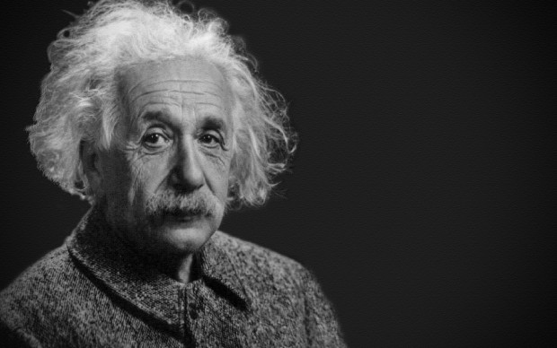

Albert Einstein
The man who invented relativity

Albert Einstein in his finest moment
Here is the lif of Albert Einstein
- Albert Einstein was born in Ulm, in the Kingdom of Württemberg in the German Empire, on 14 March 1879
- In 1894, Hermann and Jakob's company lost a bid to supply the city of Munich with electrical lighting because they lacked the capital to convert their equipment from the direct current (DC) standard to the more efficient alternating current (AC) standard.
- At age 13, Einstein was introduced to Kant's Critique of Pure Reason, and Kant became his favorite philosopher, his tutor stating
- After graduating in 1900, Einstein spent almost two frustrating years searching for a teaching post.
- By 1908, he was recognized as a leading scientist and was appointed lecturer at the University of Bern.
- Based on calculations Einstein made in 1911, about his new theory of general relativity, light from another star should be bent by the Sun's gravity